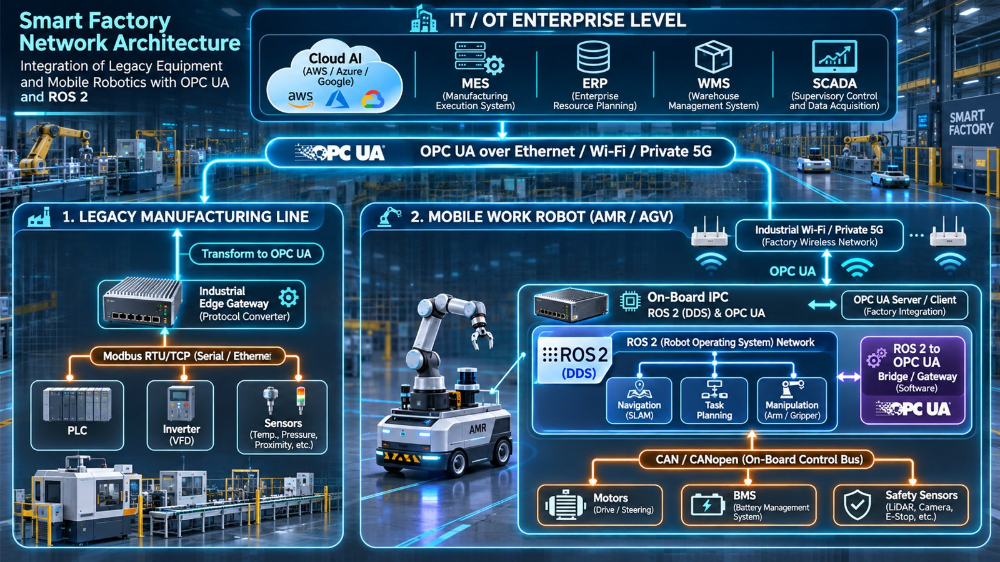

제조 현장의 디바이스와 네트워킹
PLC에서 OPC UA까지 — 공장 안의 장치들이 어떻게 말을 주고받는지, 그리고 왜 OPC UA가 필요한지를 이해하기 위한 배경 지식
0. 이 문서는
수업의 OPC UA 실습(Net2_Intro)을 해 보면 서버가 Factory / Line1 / Temp01 / Temperature 라는 트리를 보여 주고, 클라이언트가 그것을 탐색하고 읽고 구독합니다. 그런데 "왜 굳이 이런 구조가 필요하지? 실제 공장에서는 어떤 장치가 어떻게 연결되어 있지?"라는 질문이 남습니다. 이 문서는 그 질문에 답하기 위한 배경 지식을 정리했습니다.
누구를 위한 문서인가
공장 현장 경험이 많지 않거나 컴퓨터공학이 전공이 아닌 학생. 용어는 처음 나올 때 쉬운 말로 풀었습니다.어떻게 읽으면 좋은가
수업 전에 1~3절로 큰 그림을 보고, 수업 후에 궁금한 절을 골라 읽으세요. 모르는 용어는 용어 사전에 있습니다.이 문서의 한계
개념과 구조를 이해하기 위한 자료입니다. 제품·규격의 세부 사양은 제조사 문서와 표준을 확인하세요.1. 한눈에 보기
현대의 공장은 오래된 설비(수십 년 쓴 PLC와 계측기), 이동 로봇(AMR), 그리고 AI 장비가 한 공간에 섞여 있습니다. 이들은 서로 다른 회사가 서로 다른 방식으로 만들었기 때문에, 말(통신 규약)이 제각각입니다. 이 파편화가 스마트 팩토리의 가장 큰 걸림돌이고, OPC UA는 이를 해결하려는 "공통 언어"입니다.

- PLC는 공장의 심장이다. 일반 컴퓨터와 달리 정해진 주기를 반드시 지키는 것이 존재 이유이다.
- 현장의 통신은 제조사마다 다르고, 값만 전달할 뿐 의미(단위, 이름)를 담지 않는 경우가 많다.
- OPC UA는 장비의 데이터를 의미와 함께, 안전하게 주고받는 공통 언어다. 오래된 설비는 게이트웨이로 감싸 연결한다.
2. IT와 OT, 두 세계
같은 "컴퓨터와 네트워크"라도 사무실(IT)과 공장(OT)은 무엇을 가장 소중히 여기는가가 다릅니다.

| IT (Information Technology) | OT (Operational Technology) | |
|---|---|---|
| 대상 | 사무·업무 시스템, 서버, 클라우드 | 설비, 센서, 제어기, 로봇 — 물리적인 것을 움직이는 시스템 |
| 가장 중요한 것 | 데이터의 이동성, 확장성, 보안 | 안전, 신뢰성, 정해진 시간 안에 반응(실시간성) |
| 고장이 나면 | 서비스가 느려지거나 멈춘다 (재시작하면 된다) | 설비 손상, 불량, 인명 사고까지 이어질 수 있다 |
| 수명 | 수 년 단위로 교체 | 수십 년 쓰는 설비도 흔하다 |
| 네트워크 | 인터넷에 연결되어 있다 | 전통적으로 외부와 단절된 폐쇄망 |
인더스트리 4.0 이후에는 설비 데이터를 클라우드로 모아 고장 예측(예지보전, PdM)을 하고, 주문이 바뀌면 라인을 유연하게 바꿔야 합니다. 그러면 두 세계가 만나야 하는데(IT/OT 융합), 이때 세 가지 문제가 생깁니다.
- 프로토콜의 폐쇄성 — 제조사 고유의 방식(예: Siemens S7, Rockwell CIP, Mitsubishi MC Protocol)에 묶여, 다른 회사 장비와 붙이기 어렵다 (벤더 락인, Vendor Lock-in).
- 의미(Semantics)의 부재 — 숫자만 오가고 "무엇의, 어떤 단위인지"가 빠져 있다. IT 시스템이 쓰려면 사람이 일일이 해석해 줘야 한다.
- 보안 취약점 — 폐쇄망을 전제로 설계된 옛 통신이 상위 네트워크에 열리면 해킹에 노출된다.
3. 공장에는 어떤 장치가 있을까

공장의 장치는 "느끼고 → 판단하고 → 움직이고 → 보고한다"는 흐름으로 이해하면 쉽습니다.
| 역할 | 장치 | 쉬운 설명 |
|---|---|---|
| 느낀다 | 센서 (온도, 압력, 근접, 광전 센서 등) | 사람의 눈·피부. 물리량을 전기 신호(24V 온/오프, 4~20mA 아날로그)로 바꾼다 |
| 판단한다 | PLC / PAC | 설비의 두뇌. 센서 신호를 보고 "모터를 돌려라" 같은 결정을 정해진 주기로 반복한다 |
| 움직인다 | 액추에이터 (모터, 인버터·서보 드라이브, 솔레노이드 밸브, 릴레이) | 사람의 근육. 제어기의 명령을 실제 힘·동작으로 바꾼다 |
| 보여 준다 | HMI (Human-Machine Interface) | 설비 옆의 터치 패널. 작업자가 상태를 보고 명령을 준다 |
| 모아서 감시한다 | SCADA | 여러 설비를 한꺼번에 모니터링·제어하는 관제 시스템 |
| 생산을 관리한다 | MES (Manufacturing Execution System) | "오늘 무엇을 몇 개 만들었나, 불량은?" 같은 현장 생산 실행 관리 |
| 회사를 운영한다 | ERP · WMS, Cloud AI | 주문·재고·회계 같은 기업 전체 관리, 창고 관리, 대규모 데이터 분석 |
자동화 피라미드 – 아래는 현장, 위는 회사
이 장치들은 층을 이루어 연결됩니다. 아래층일수록 빠르고 물리적이며(밀리초 단위의 제어), 위층일수록 느리고 업무적입니다(분·시간 단위의 생산·경영 관리). 층마다 주로 쓰는 통신 방식도 다릅니다.
4. PLC – 공장의 심장

PLC와 PC는 무엇이 다른가
PLC(Programmable Logic Controller)는 생김새는 컴퓨터와 비슷하지만 존재 목적이 다릅니다. 옛날에는 릴레이와 전선으로 만들던 "버튼을 누르면 모터가 돈다" 같은 논리 제어를 프로그램으로 대체한 장치입니다. 여기에 모션 제어, 비전, IT 통신까지 통합한 상급 장치를 PAC(Programmable Automation Controller)라고 부릅니다.
| 일반 PC | PLC | PAC | |
|---|---|---|---|
| 설계 목적 | 사무, 웹, 멀티미디어, 대용량 계산 | 설비의 순서·논리(온/오프) 제어 | 순서 제어 + 다축 모션 + 비전 + IT 통신 통합 |
| 운영체제 | Windows, macOS, 데스크톱 Linux | 제조사 고유 펌웨어 또는 가벼운 RTOS | 고성능 멀티코어 RTOS, 하이퍼바이저 |
| 일하는 방식 | 비결정적 — 여러 작업을 시분할로 처리해 반응 시간이 들쭉날쭉 | 결정적 — 고정 주기(스캔 타임)를 보장 | 결정적 멀티태스크 + 통신 작업 분리 |
| 입출력 | USB, PCIe, HDMI 등 IT 규격 | 24V 디지털, 4~20mA 아날로그를 직접 연결 | 초고속 버스 I/O, 모션 축, 광역 네트워크 |
| 환경 | 통제된 실내(먼지·충격에 약함) | 가혹한 공장 환경(노이즈·먼지·진동 견딤, 팬 없음) | 산업용 모듈 규격(내진동, 넓은 온도 범위) |
| 프로그래밍 | C++, Python, Java 등 | IEC 61131-3 (래더 로직, 펑션 블록 등) | IEC 61131-3(ST) + C/C++ |
핵심은 "주기 보장" – 스캔 사이클과 결정론
PLC는 전원이 켜져 있는 동안 같은 세 단계를 정해진 주기로 끝없이 반복합니다. 이 주기를 스캔 타임이라고 합니다.
결정론(Determinism)이란 "같은 일이 항상 같은 시간 안에 끝난다"는 성질입니다. 컨베이어 위의 제품을 정확한 순간에 밀어내야 하는 설비에서는 평균이 빠른 것보다 한 번도 늦지 않는 것이 중요합니다. 일반 PC는 백그라운드 작업과 운영체제의 스케줄링 때문에 반응 시간이 들쭉날쭉(지터, Jitter)한데, PLC는 이를 아주 작은 오차 안으로 막습니다.
PLC 안쪽 – 하드웨어와 운영체제 (알아 두면 좋은 내용)
프로세서
- ARM Cortex-A / Cortex-R: 전력 대비 성능이 좋아 중소형 PAC·게이트웨이에 많이 쓴다. A는 리눅스·통신을, R은 정해진 시간의 I/O 제어를 맡는 식으로 나눠 쓴다
- x86 (Intel, AMD): 고속 모션이나 머신 비전처럼 계산이 큰 PAC·산업용 PC(IPC)
- FPGA / ASIC: 통신 프레임(Profinet IRT, EtherCAT)을 CPU를 거치지 않고 하드웨어로 빠르게 처리
실시간 운영체제(RTOS)
- VxWorks, QNX: 항공·방산·로봇 제어기에 쓰이는 상용 RTOS
- PREEMPT_RT Linux: 일반 리눅스를 "실시간으로 선점 가능하게" 고친 오픈소스 커널. 최신 개방형 컨트롤러에서 쓰인다
- TwinCAT(Beckhoff): 윈도 PC의 CPU 코어 일부를 운영체제에서 떼어 내 제어 전용으로 쓰는 소프트웨어 PLC 방식
대표 제조사 (예시)
- Siemens: SIMATIC S7-1200/1500, 엔지니어링 툴 TIA Portal, 통신 Profinet
- Rockwell Automation(Allen-Bradley): ControlLogix/CompactLogix, Studio 5000, EtherNet/IP(CIP)
- Mitsubishi Electric: MELSEC iQ-R/iQ-F, 서보 MELSERVO, CC-Link IE TSN
각 제조사는 자기 방식의 통신과 프로그래밍 도구를 갖고 있습니다. 이것이 "제조사마다 말이 다르다"는 문제의 출발점입니다. (제품명은 이해를 돕는 예시이며 추천이 아닙니다.)
5. 엣지 AI와 실시간성 – 왜 AI를 PLC와 분리할까
머신 비전 검사, 진동 분석을 통한 고장 예측, 로봇의 장애물 인식에 딥러닝이 필요해지면서 현장에 GPU·NPU가 달린 장치(엣지 AI)가 들어옵니다. 그런데 이것을 PLC와 한 몸으로 만들면 문제가 생깁니다.

GPU 계산이 실시간 제어에 해로운 이유
- 평균은 빠르지만 편차가 크다 — GPU는 많은 데이터를 한꺼번에 처리하는 데 강하지만, 어떤 프레임은 오래 걸리는 식으로 시간이 불규칙(지터)하다.
- 버스를 나눠 쓴다 — 큰 이미지를 메모리로 옮기는 전송이 제어 작업의 메모리 접근을 막을 수 있다.
- 즉시 끼어들기(선점)가 어렵다 — 범용 GPU 계산은 "급한 일 먼저"로 끊고 바꾸는 기능이 약하다.
현장의 해법: 제어 도메인과 AI 도메인을 분리
6. 현장의 통신 – 필드버스
필드버스(Fieldbus)는 센서·드라이브·제어기를 잇는 현장 통신입니다. 인터넷의 HTTP처럼 "웹 문서"를 주고받는 것이 아니라, 정해진 주기에 작은 값을 정확히 주고받는 것이 목적입니다. 수업과 관련해 세 가지를 소개합니다.
Modbus – 가장 단순하고 오래된 방식
- 1979년 Modicon이 만든 마스터-슬레이브(요청-응답) 방식. 구조가 단순해서 지금도 매우 널리 쓰인다.
- 종류: 시리얼 배선의 Modbus RTU(RS-485/232)와, 이더넷 위의 Modbus/TCP(포트 502).
- 데이터는 코일(Coil, 1비트)과 16비트 레지스터의 번호(예: 40001)로만 표현된다.
- 의미가 없다 — "40001번 레지스터 = 4000"일 뿐, 그것이 유압 압력인지, 단위가 bar인지, 값에 0.1을 곱해야 하는지는 어디에도 적혀 있지 않다. 그래서 주소 맵 매뉴얼이 반드시 필요하다.
- 인증·암호화가 없다 — 같은 네트워크에 들어오면 누구나 읽고 쓰고, 값을 엿볼 수 있다.
CAN / CANopen – 로봇과 모터 안쪽의 통신
- 자동차와 로봇 내부에서 쓰는 2선식 버스. 여러 장치가 동시에 말하려 하면 우선순위 높은 메시지가 먼저 가도록 정리(중재)해서 신뢰성이 높다.
- CANopen은 CAN 위에 "무엇을 어떻게 주고받을지"를 표준화한 규격(CiA 301). 모터 드라이버용 프로파일(CiA 402)도 있다.
- 객체 사전(Object Dictionary): 장비의 모든 설정·값이
인덱스:서브인덱스의 표로 정리된다. 예)0x6040=모터 제어 워드,0x6064=현재 위치. - 두 가지 주고받기: PDO — 빠른 실시간 값(확인 응답 없이 방송), SDO — 설정·파라미터(1:1로 확인하며 읽기/쓰기).
ROS 2 – 이동 로봇 내부의 분산 제어
- AMR(자율 이동 로봇)은 내부에 여러 노드(센서 드라이버, 경로 계획, 모터 브리지 …)가 따로 돌며 서로 메시지를 주고받는다. 이 구조를 제공하는 소프트웨어가 ROS 2이다.
- ROS 2는 DDS(브로커 없는 Pub/Sub 미들웨어)를 통신 기반으로 쓴다. (수업의 DDS 설명 참고)
- 예: 상위 속도 명령을 받으면 Motor Bridge 노드가 이를 CANopen 메시지로 바꿔 바퀴 모터 드라이버에 보낸다.

| Modbus | CAN / CANopen | ROS 2 (DDS) | |
|---|---|---|---|
| 주로 쓰이는 곳 | 레거시 설비, 계측기, 인버터 | 모터·드라이브, 로봇·차량 내부 | 이동 로봇·로봇 시스템 내부 |
| 통신 방식 | 마스터가 묻고 슬레이브가 답함 | 방송 + 우선순위 중재 | 토픽 기반 Pub/Sub |
| 데이터 표현 | 레지스터 번호 | 객체 사전 인덱스 | 이름 있는 토픽과 메시지 타입 |
| 보안 | 없음 | 없음(버스 내부 전제) | 구성에 따라 가능 |
7. OPC UA – 공장의 공통 언어
지금까지 본 통신은 제조사·용도마다 달랐고, 대부분 값만 전달했습니다. OPC UA(Open Platform Communications Unified Architecture, IEC 62541)는 단순한 전송 규칙이 아니라, "장비의 데이터를 어떻게 정의하고, 의미를 붙이고, 안전하게 주고받을 것인가"를 정한 응용 계층의 표준입니다. 플랫폼과 프로그래밍 언어에 독립적입니다.
OPC UA의 구조
주소 공간 – 설비를 트리로 표현한다
OPC UA 서버는 자신이 가진 모든 정보를 노드(Node)로 표현하고, 노드들을 관계(Reference)로 이어 그래프(대개 폴더 같은 트리)를 만듭니다. 클라이언트는 미리 주소를 외우지 않아도 Browse 서비스로 서버에 "무엇이 있나요?"라고 물어 구조를 실행 중에 탐색할 수 있습니다. 수업 실습의 06_opcua_client.py가 바로 이것을 합니다.

- 노드의 종류(NodeClass): Object(객체·폴더), Variable(값), Method(기능) 등
- 모든 노드는 공통 속성을 가진다: NodeId(고유 주소), NodeClass, BrowseName, DisplayName, Description, WriteMask … 변수는 여기에 Value와 데이터 형식이 더해진다
- 예)
ns=2;s=Press01.HydraulicPressure— 네임스페이스 2 안의 문자열 이름이Press01.HydraulicPressure인 노드
두 가지 통신 방식 – Client-Server와 Pub/Sub
MQTT, REST API와는 경쟁일까?
아닙니다. 서로 다른 일을 잘하므로 함께 쓰는 경우가 많습니다.
| OPC UA | MQTT | REST API (HTTP) | |
|---|---|---|---|
| 핵심 강점 | 설비를 의미와 함께 표현하고 접근 (정보 모델, 서비스, 보안) | 가볍게 대량 전달 (토픽 기반 Pub/Sub) | 웹·모바일 서비스와 쉽게 연결 (무상태 요청-응답) |
| 약점 | 구현이 무겁고 복잡할 수 있다 | 페이로드가 그냥 바이트 → 단위·의미 해석 규칙이 없다 | 짧은 주기의 연속 스트리밍에는 헤더·연결 비용이 크다 |
| 어울리는 곳 | 현장 설비 ↔ SCADA/MES | 장치 → 클라우드 수집 | ERP 연동, 웹 대시보드 |
- OPC UA over MQTT: OPC UA의 데이터 모델(의미)을 MQTT로 실어 클라우드로 보내는 방식 (OPC UA Part 14). "의미 있는 데이터를, 가볍게".
- 현장 내부는 OPC UA 바이너리로 빠르게, 위쪽 웹 화면·ERP 연동은 게이트웨이가 REST(JSON)로 바꿔 제공한다.
8. 오래된 설비를 OPC UA로 – 에지 게이트웨이
공장의 모든 설비를 최신 기종으로 바꾸는 것은 비용상 불가능합니다. 그래서 오래된 설비는 그대로 두고, 옆에 "통역사"(에지 게이트웨이)를 둡니다.

- 오래된 PLC·계측기를 게이트웨이의 RS-485/이더넷 포트에 연결한다.
- 게이트웨이의 소프트웨어(예: Node-RED, Kepware, 오픈소스 커넥터)가 Modbus 레지스터를 주기적으로 읽는다(폴링).
- 읽은 값을 이름·단위·배율을 붙여 OPC UA 노드로 매핑한다.
- 상위 SCADA/MES는 레지스터 번호를 알 필요 없이 OPC UA로 읽고 쓴다.
이동 로봇(AMR)은 어떻게 연결할까
- 로봇 안쪽은 ROS 2(주행 계산)와 CANopen(모터·배터리·안전 센서)으로 돌아간다.
- 공장 관제(FMS)는 로봇의 라이다 점군 같은 고주기 원시 데이터가 필요하지 않다. 위치, 배터리 잔량, 작업 상태 같은 요약 정보만 필요하다.
- 그래서 로봇 안의 IPC에 OPC UA 서버(래퍼)를 두어, ROS 2의 상위 상태 토픽(
/amr/pose,/amr/battery_state…)을 OPC UA 노드로 보여 주고, 작업 지시는 OPC UA 메소드 호출(ExecuteMission(TargetStation=B3))로 받는다.
9. 현장에서 꼭 기억할 것
📶 무선 연결과 로밍
이동 로봇이 움직이며 Wi-Fi 접속 장치(AP)를 바꿀 때 순간적으로 패킷이 끊기거나 TCP가 다시 연결되는 일이 생길 수 있다. 일반 상용 Wi-Fi 대신 빠른 로밍을 지원하는 산업용 Wi-Fi 6나, 지연이 짧은 5G 특화망(이음 5G 등)을 검토한다.
🛑 기능 안전은 네트워크에 맡기지 않는다
비상 정지(E-Stop)와 인명 보호 기능은 무선 OPC UA 네트워크에 절대 의존하면 안 된다. 안전 규격(ISO 13849 PL d/e, IEC 62061 SIL 2/3)을 만족하는 세이프티 컨트롤러와 안전 라이다가 구동 전원을 직접 차단하도록 설계한다.
🔒 보안
Modbus 같은 옛 통신은 인증·암호화가 없다. 폐쇄망이 열리면 위험해지므로 게이트웨이와 상위 구간에 OPC UA의 인증서 기반 보안, 네트워크 분리(구역 나누기)를 적용한다. 이 수업의 실습 서버는 보안을 끈 학습용이다.
10. 수업 실습과 연결하기
수업의 OPC UA 실습(Net2_Intro/python/06_opcua_*.py)은 이 문서의 개념을 작은 규모로 체험하는 것입니다.
| 실습에서 한 일 | 이 문서의 어디와 연결되나 |
|---|---|
Browse: 서버에 "무엇이 있나요?" → Factory / Line1 / Temp01 / … 트리 | 7절 주소 공간 — 폴더 같은 트리, 런타임 탐색 |
Read: Temperature 값을 읽는다 | 7절 — Client-Server의 요청·응답. Modbus의 "레지스터 읽기"와 비교(6절) |
Write: Setpoint는 써지고, Temperature는 쓰기 거부(BadUserAccessDenied) | 7절 — 노드 속성(쓰기 가능 여부), 9절 — 보안과 권한 |
| Subscription: 값이 바뀔 때마다 알림 | 7절 Client-Server와 Pub/Sub — 폴링 부담을 줄이는 구독 |
캡처: HEL → ACK → OPN → MSG … → CLO 바이너리 | 7절 구조 — opc.tcp 바이너리 전송, 보안 채널(OPN) |
11. 용어 사전
| 용어 | 쉬운 설명 |
|---|---|
| OT / IT | 공장 설비를 움직이는 기술 / 사무·정보 시스템 기술 |
| PLC / PAC | 설비의 순서·논리를 정해진 주기로 실행하는 산업용 제어기 / 모션·비전·IT까지 통합한 상급 제어기 |
| HMI / SCADA | 설비 옆 조작 화면 / 여러 설비를 한꺼번에 감시·제어하는 관제 시스템 |
| MES / ERP / WMS | 현장 생산 실행 관리 / 기업 자원(주문·재고·회계) 관리 / 창고 관리 |
| 센서 / 액추에이터 | 물리량을 읽는 장치 / 제어 신호를 힘·동작으로 바꾸는 장치(모터, 밸브 등) |
| 스캔 타임 | PLC가 "입력 → 계산 → 출력"을 한 바퀴 도는 데 쓰는 고정 주기 |
| 결정론 / 지터 | 항상 정해진 시간 안에 끝나는 성질 / 반응 시간의 들쭉날쭉함 |
| RTOS | 정해진 시간 안의 반응을 보장하도록 만든 운영체제 |
| 필드버스 | 센서·드라이브·제어기를 잇는 현장 통신 (Modbus, CANopen, Profinet, EtherCAT 등) |
| Modbus | 1979년에 나온 단순한 요청-응답 현장 통신. 레지스터 번호로만 데이터를 표현 |
| CAN / CANopen | 차량·로봇 내부의 버스 / 그 위에 "무엇을 주고받을지"를 표준화한 규격 |
| PDO / SDO | CANopen의 빠른 실시간 값 전송 / 설정·파라미터 읽기·쓰기 |
| AMR / AGV | 스스로 길을 찾는 이동 로봇 / 정해진 경로를 따라 다니는 무인 운반차 |
| ROS 2 / DDS | 로봇 소프트웨어 프레임워크 / 브로커 없이 노드끼리 직접 주고받는 Pub/Sub 미들웨어 |
| OPC UA | 장비 데이터를 의미·보안과 함께 주고받는 산업용 표준 (IEC 62541) |
| 노드 / 주소 공간 | OPC UA의 정보 단위 / 노드들이 이루는 트리(그래프) 구조 |
| Browse / Read / Write | OPC UA에서 구조 탐색 / 값 읽기 / 값 쓰기 |
| Subscription | 값이 바뀔 때만 서버가 알려 주는 구독 방식 |
| TSN | 이더넷에서 시간에 민감한 통신을 보장하는 기술 모음 (Time-Sensitive Networking) |
| 에지 게이트웨이 | 현장 옆에서 서로 다른 통신을 통역해 주는 작은 산업용 컴퓨터 |
| 벤더 락인 | 한 제조사 방식에 묶여 다른 제품과 연결·교체가 어려워지는 상태 |
| 예지보전 (PdM) | 데이터를 분석해 고장을 미리 예측하고 정비하는 방식 |
| 기능 안전 | 사람·설비를 지키기 위해 위험할 때 반드시 안전 상태로 만드는 설계 (E-Stop 등) |
12. 스스로 점검
답을 먼저 생각해 본 뒤 눌러서 확인하세요.
1. PLC가 일반 PC보다 "느린 계산"을 하는데도 공장에서 PC로 대체되지 않는 이유는?
속도가 아니라 정해진 주기를 반드시 지키는 것(결정론)이 목적이기 때문이다. PC는 운영체제의 스케줄링과 백그라운드 작업으로 반응 시간이 들쭉날쭉하고, 공장 환경(먼지·진동·노이즈)에도 약하다. 또 24V·4~20mA 신호를 직접 연결하도록 설계되지 않았다.
2. Modbus로 읽은 값 "4000"을 IT 시스템이 바로 쓰기 어려운 이유는? 어떻게 해결하나?
값의 이름, 단위, 배율이 없어서 사람이 매뉴얼로 해석해야 하기 때문이다. 게이트웨이에서 이름·단위·배율을 붙여 OPC UA 노드(예: Press01.HydraulicPressure = 400.0 bar)로 바꾸면 상위 시스템은 의미를 그대로 쓸 수 있다.
3. 딥러닝 비전 검사를 PLC 안에서 직접 돌리지 않고 Edge AI 박스로 분리하는 이유는?
GPU 계산은 시간 편차(지터)가 커서 고정 주기 제어를 방해할 수 있다. 그래서 제어 도메인과 AI 도메인을 분리하고, AI는 불량 판정 같은 결과만 PLC에 알려 준다.
4. MQTT와 OPC UA는 경쟁 관계인가? 같이 쓰면 어떤 장점이 있나?
경쟁이라기보다 보완이다. MQTT는 가볍게 대량 전달하는 데 강하지만 데이터의 의미 규칙이 없고, OPC UA는 의미(정보 모델)와 보안을 제공한다. OPC UA over MQTT로 "의미 있는 데이터를 가볍게" 클라우드에 보낼 수 있다.
5. 이동 로봇의 비상 정지를 상위 OPC UA 명령으로 처리하면 왜 안 될까?
무선 네트워크는 로밍·지연·단절이 생길 수 있어 안전 기능의 신뢰성을 보장할 수 없다. 비상 정지와 인명 보호는 로봇 안의 세이프티 컨트롤러·안전 라이다가 전원을 직접 차단하는 방식으로 네트워크와 무관하게 동작해야 한다.
6. 수업 실습의 OPC UA 서버와 실제 공장의 OPC UA 서버는 무엇이 다른가?
실습 서버는 값이 가상이고 보안이 꺼져 있다. 실제 공장에서는 값이 PLC·센서·Modbus 레지스터에서 올라오고, 인증서 기반 보안과 권한 관리를 켠다.